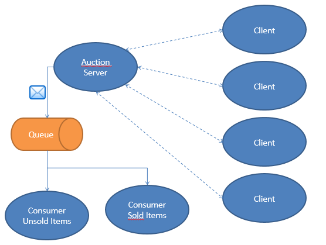

In this lab we are going to focus on two topics: JAVA NIO and JMS through the design and the implementation of a Auction Server and two Auction Consumers in Netbeans, see the figure below.
The server uses a Java DB database with auction items. Make and populate a database using Netbeans with the following scripts.
auction.auction with items to be sold.The classes Auction, Item and Offer are given. They provide the required functionality to connect to the database, to pick a random item and to check whether an offer is accepted.
Auction uses a DataSource with the JNDI name jdbc/auction. You have to configure a DataSource in Glassfish with this JNDI name that connects to the database you have created. See for instance https://docs.oracle.com/cd/E19316-01/820-4335/gibzk/index.html. Use the command line interface asadmin to create a connection pool and a datasource! You can find the commandline tool asadmin in the bin directory of Glassfish. You may need to add the directory of the java jdk to the PATH environment variable. Test the given classes with a program of the type appclient. (see running the server below)
When an item is sold to one of the clients or when its not sold within a certain amount of time the server sends a message to a queue. You have to configure this queue in Glassfish. For more information using asadmin see https://docs.oracle.com/cd/E19798-01/821-1758/6nmnj7ptj/index.html (Example 2 Creating a JMS destination resource).
The Server can accept the requests of several clients who are willing to offer on an item. The auction consists of several items and each client gets a limited time to offer on a particular item until the next item is offered for sale. The server can receive messages from any of those clients at any time and needs to process it. Use a selector to establish this.
The Server is the manager of the auction process, which is responsible for taking the following actions:
ITEM id description minimumPrice.
If there's no offer for an item after one minute a new item will be offered for sale. If there is an offer from a client, then a client has one minute to make a better offer.On the other hand, the client exchanges messages with the server for several purposes including
REGISTER nameOFFER priceQUITEvery time when the server offers an new item for sale, it attaches a message to the queue. The content of the message depends on whether the item is sold.
"NOT SOLD id LAST OFFER price""ITEM id SOLD BY name FOR price"The server has to be able to use the datasource and the queue. Therefor it must run in a Glassfish environment. You can realize this with a Netbeans Project type "Entreprise Application Client" or use the command appclient. This program is found in the directory ../glassfish-4.1/glassfish/bin. Add this directory to the PATH environment variable.
If Netbeans doesn't generate a jar (in a directory dist), run the "Build" command.
Use the classes java.util.Timer en java.util.TimerTask.
You can use nc (linux) of ncat (windows) to simulate a client. Je vindt ncat op https://nmap.org/download.html (zip uitpakken en het commando ncat gebruiken).
The auction consumers process the messages out of the queue. One consumer handles all sold items, the other all unsold items.
Example output first consumer
Example output second consumer